|


|
|
| Service News | ||
|
|
Alfa various models
Version: Giulia, MiTo, 159, 4C, Brera/Spider, 8C with Opt. Tyre pressure monitoring system (TPMS) |
|
|||
| 4450 0 000 AA |
TYRE PRESSURE MONITORING CONTROL UNIT
Software update of the TPMS2 Reader MY13 equipment - Network information |
|||

|
Cancels and replaces Service News 44.02.15 of 17/06/2015 for validity extension to the Giulia model |
DESCRIPTION
The software update for the new TPMS2 Reader MY13 equipment, which has replaced the previous TPMS Reader (no longer supplied), is available on the eTools website.
|
|
The previous TPMS Reader equipment will no longer be supplied and software updates will also no longer be available. |
To update the equipment it is necessary to:
- Acquire the software (download)
- Ask for password (if not available)
- Update software
After the update, the TPMS2 Reader MY13 equipment can be used for the following vehicles:
- Giulia
- Mito
- 159
- 4C
- Brera/Spider
- 8C
|
|
To be able to use the TPMS2 Reader equipment on the Giulia model, the software must be updated to version 3.43 or later. |
UPDATING SOFTWARE ACQUISITION
Before starting, check that the following equipment is available:
- Personal Computer with Windows© XP / Windows© VISTA / Windows© Seven
- Internet connection to the website
|
|
The size of the file to be downloaded is about 22 MB. |
Proceed as follows to download the update and install the TMPS Manager programme on the PC.
- Connect to the eTools website.
- Select DOWNLOAD (1 - Fig. 1), then select "UPDATE TPMS" (2 - Fig. 1) and confirm.
Fig. 1
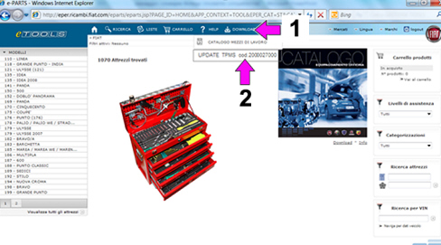

- Download the software and save it on the PC.
- Execute the file "Setup.exe" (1 - Fig. 2).
Fig. 2
- Select the reference language (1 - Fig. 3) and confirm (2 - Fig. 3).
Fig. 3
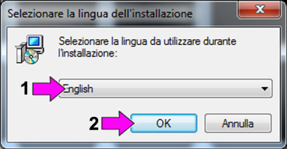
- Confirm the installation (1 - Fig. 4).
- Accept the terms of the license agreement (2 - Fig. 4) and continue (3 - Fig. 4).
Fig. 4
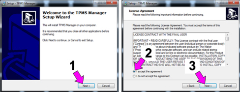
- Enter the required data (1 and 2 - Fig. 5) and press “Next” to continue (3 - Fig. 5).
Fig. 5
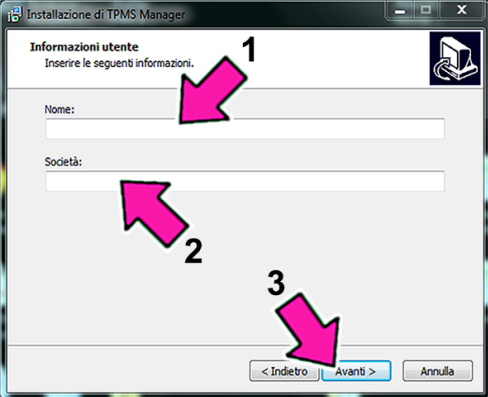
|
|
In the compulsory fields 1 (User Name) and 2 (Organization) enter an alphanumeric code and the Department, respectively, as required. |
- Confirm the installation (1, 2 and 3 - Fig. 6).
Fig. 6
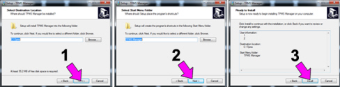
- Wait for the installation to be completed: a progress bar (1 - Fig. 7) will indicate the advancement state.
Fig. 7
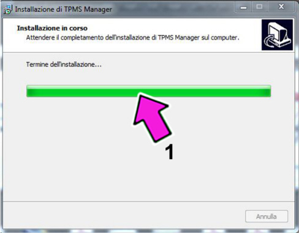
- Confirm installation of the Drivers with “Next” (2 - Fig. 8).
Fig. 8
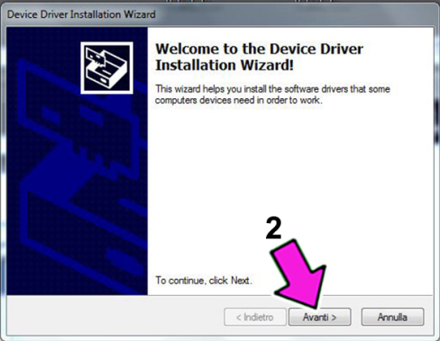
- Complete installation of the Drivers with “End” (3 - Fig. 9).
Fig. 9
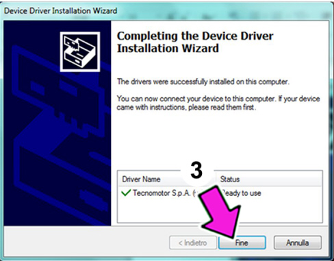
- Select “End” (4 - Fig. 10) (some operating system will require to restart the PC; restart the PC in this case).
Fig. 10
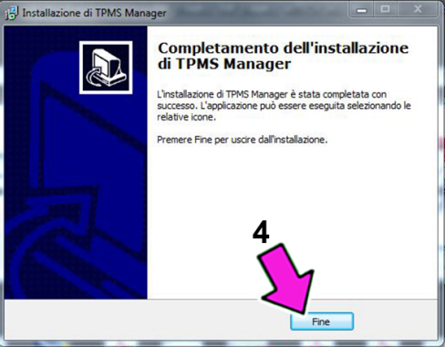
- At the end of the installation and after restarting the PC, the icon (1 - Fig. 11) for connecting to the TPMS Manager program is displayed.
Fig. 11

|
|
A password is required to use the program; proceed as follows. |
TPMS MANAGER PROGRAM UPDATE ON PC AND AUTOMATIC EQUIPMENT FIRMWARE UPDATE
|
|
For the update, the equipment must be on all the process long. The instrument will automatically switch to stand-by if it remains inactive for longer than 5 minutes and the update operation will be interrupted. Repeat the procedure from the beginning in this case. |
- Connect the TPMS2 Reader MY13 equipment to the PC with the supplied USB cable. The equipment will be supplied by the USB port of the PC. In this stage, the equipment recognition stage starts; it can take some minutes, wait until the system has completed the whole process.
|
|
If the PC does not recognise the presence of the equipment, check the installed firmware version: it must be 2.80 or higher. Proceed as follows if the version is not correct: MANUAL FIRMWARE UPDATE. |
- Start the TPMS Manager programme (1 - Fig. 12) selecting the connection on the desktop.
Fig. 12
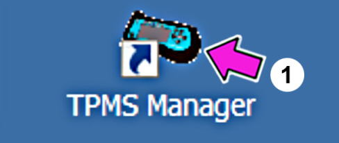
- In the window select F3 (A - Fig. 13) to activate the update from the Internet. The “Port Setting” page shown in Figure 15 will appear if the PC recognises the equipment connected to the USB port and the PC is connected to the Internet website.
- Select button F5 (B - Fig. 13) to enter the data which will be shown on reports and printouts. See Fig. 14.
- Select button F6 (C - Fig. 13) to change the language.
Fig. 13
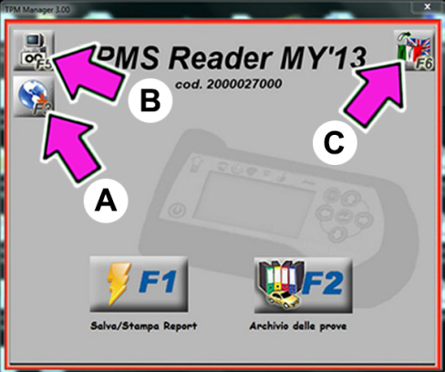
- Enter data and press F1 (A - Fig. 14) to confirm.
Fig. 14
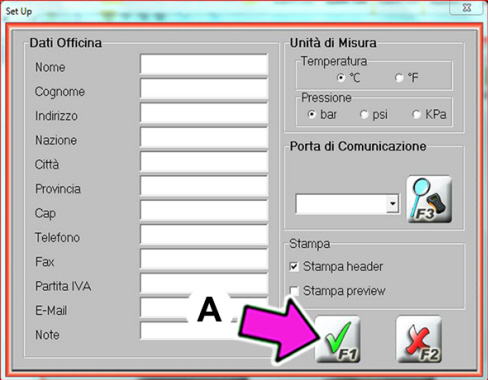
- The COM port associated to the equipment is shown on the “Port Setting” page (Fig. 15).
- If the PC correctly recognises the USB port to which the equipment is connected, select button F2 (A - Fig. 15) to activate update from the Internet. A page prompting to enter the equipment password will appear (Fig. 17).
|
|
The USB peripheral device recognition time is variable according to the performance of your PC and may last for several minutes in some cases. |
- Select button F3 (B - Fig. 15) to search for the COM port automatically. Follow the instructions displayed.
- You may need to configure your network proxy if the PC cannot connect to the Internet website. Select F8 (C - Fig. 15); the page shown in Fig. 16 will appear.
Fig. 15
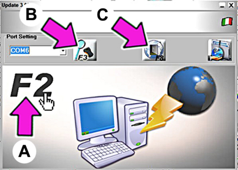
- Tick (B - Fig. 16) the “Use Proxy” checkbox and then enter the required data (IP address and Proxy server and your UserID/Network Password).
- Select button F1 (A - Fig. 16) to save the entered data and go back to the update page (Fig. 15).
Fig. 16
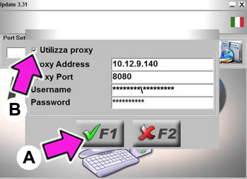
- In the window (C - Fig. 17) enter the password of the instrument and select button F1 (A - Fig. 17) to activate Internet update. The page shown in Fig. 19 will appear.
- If you do not have a password yet, select button F3 (B - Fig. 17); if the PC is provided with an email program, the email page shown in Fig. 18 will appear. Complete by providing the required data and send the email to the indicated address.
|
|
A password which lasts for one solar year is managed with the TPMS2 Reader MY13 equipment. You can receive passwords for the future years based on the data provided during the first request. |
Fig. 17
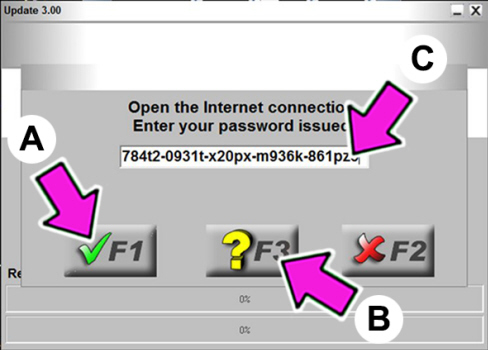
- After having typed in the required data, press F1 (A - Fig. 18) to confirm or F2 (B - Fig. 18) to cancel.
- If all data have been entered properly, within a short time you will receive a reply email with the password required to use the program.
Fig. 18
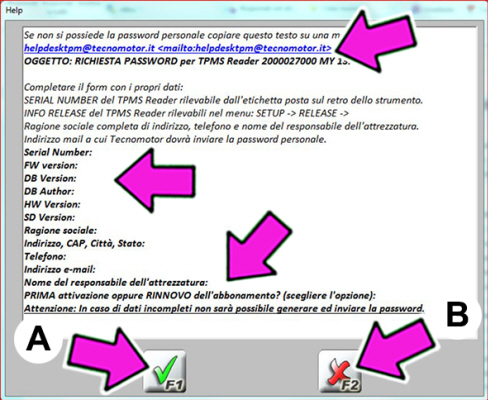
- A specific process bar will appear during the update (A - Fig. 19) to indicate the advancement state of the update and the data transfer speed.
- The animated arrow (B - Fig. 19) indicates that the communication is active.
Fig. 19
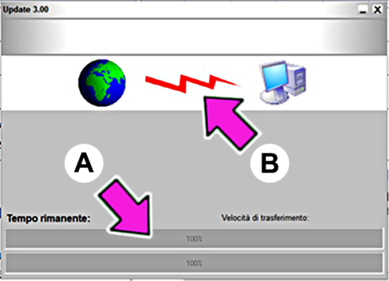
The page shown in Fig. 20 will appear before the end of the update. Disconnect the instrument from the PC, switch off the instrument and select button F1 (A - Fig. 20).
Fig. 20
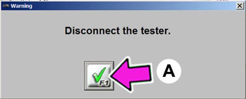
The page shown in Fig. 21 will appear before the end of the update. Select button F1 (A - Fig. 21).
Fig. 21
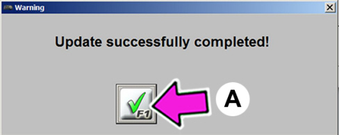
If the TPMS2 Reader MY13 equipment is already updated to the latest version, after having select the Update button F3 (A - Fig. 13), enter the password and select button F1 (A - Fig. 17) the page shown in Fig. 22 will appear: confirm by pressing button F1 (A - Fig. 22).
Fig. 22
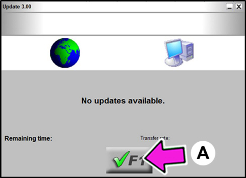
|
|
Repeat the update procedure periodically to make sure that the last available version is always available. |
MANUAL UPDATE OF INSTRUMENT FIRMWARE
|
|
If the instrument has been updated to an old version prior to release 2.80, the manual update procedure must be run before being able to access Internet updates. |
- Switch off the equipment.
- Connect the USB cable to the PC.
- Press and hold pressed the “ESC” button on the equipment.
- Connect the USB cable to the equipment.
- In this stage, the equipment recognition stage starts; it can take some minutes, wait until the system has completed the whole process. The TPM-02 peripheral device (A - Fig. 23) will appear in My Computer.
Fig. 23
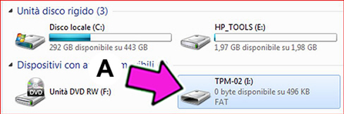
- Select the update button (A - Fig. 24).
Fig. 24
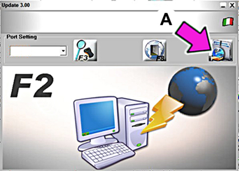
- Confirm by selecting F1 (A - Fig. 25).
Fig. 25
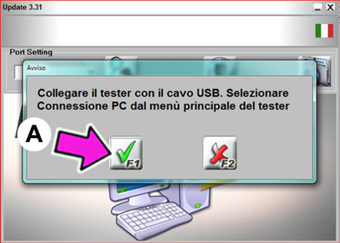
- Wait for the update to be completed: a progress bar (A - Fig. 26) will indicate the advancement state.
Fig. 26
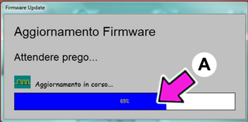
- The page shown in Fig. 27 will appear before the end of the update. Select button F1 (A - Fig. 27) to confirm.
Fig. 27
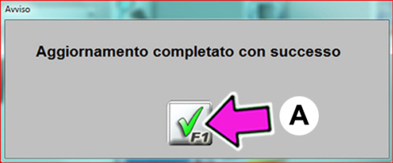
- Disconnect the USB cable from the equipment.
- Switch off the equipment.
- Shut down the TPM Manager program.
- Select the icon on the desktop (1 - Fig. 12) and repeat the TPMS program update.
MEMORY EXPANSION HARDWARE UPDATE
|
|
The equipment memory needs to be expanded started from 2015 updates. This operation is not needed for equipment made after June 2015 because the equipment is already provided with programmed SD Card. |
- The instrument for which memory expansion is required are identified during the password request step. It is important to enter the request shown in Fig. 18 correctly and completely.
- The SD Card (*) is sent free of charge to the person responsible for the equipment shown in the request in Fig. 18.
(*) specific SD Card for the equipment containing the software updated to the latest release.
- The SD Card is shipped ex works (charged to the Dealer c/o Tecnomotor di Correggio - Italy). Dealers must specify the details of their shipping agent in the request.
To install the equipment memory:
- open the memory compartment by loosening the screw (A - Fig. 28).
Fig. 28
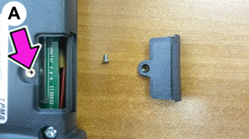
- Carefully insert the SD Card in its housing (B - Fig. 29).
- Close the memory compartment and fasten the screw.
- To end, select the icon on the desktop (1 - Fig. 12) and repeat the TPMS program update.
Fig. 29
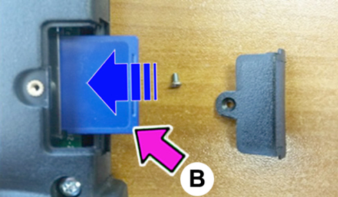